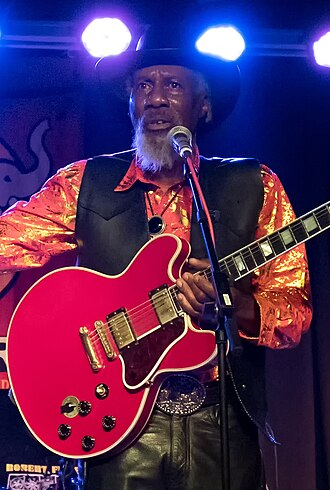

Robert Finley
Robert Finley is an American blues and soul singer-songwriter and guitarist. After decades of performing semi-professionally followed by time away from music, Finley made a comeback in 2016. He released his debut album, Age Don't Mean a Thing, later in the year, which was met positively by critics.
Complete Discography & Tracklists (19)
2016 Age Don't Mean a Thing 🎵 9 Tracks
2017 Goin' Platinum! 🎵 10 Tracks
2017 Merry Christmas, I Love You 🎵 0 Tracks
No tracks registered.
2017 Get It While You Can 🎵 0 Tracks
No tracks registered.